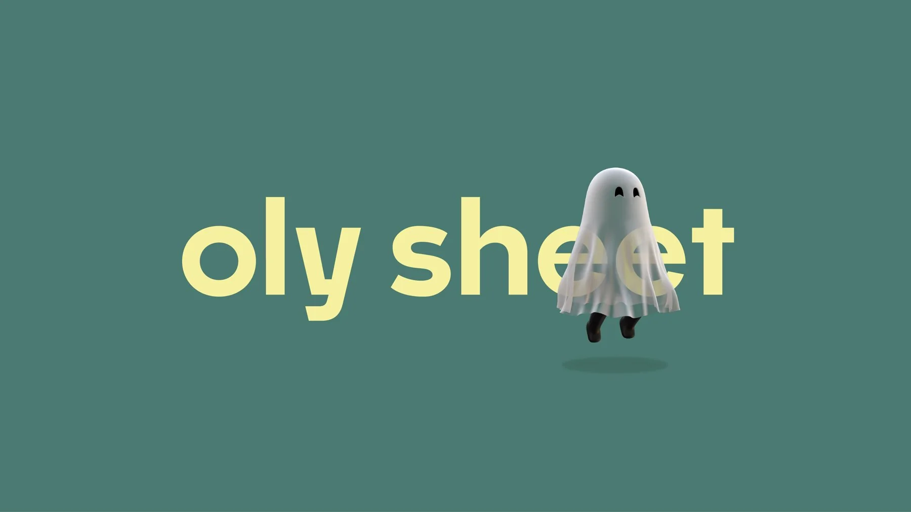
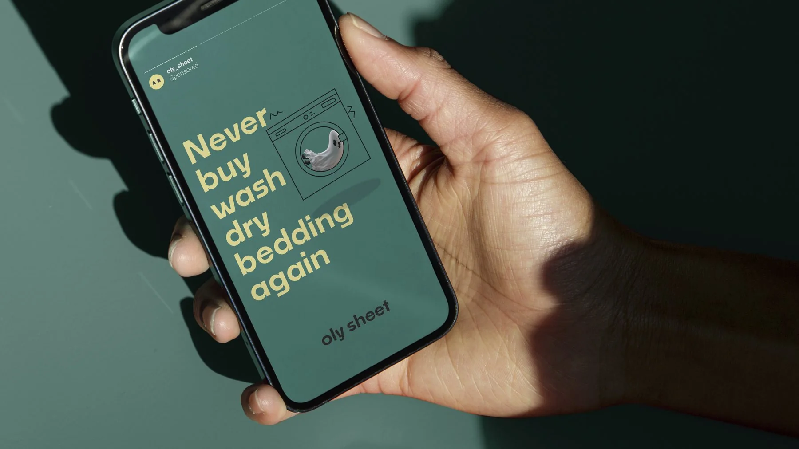
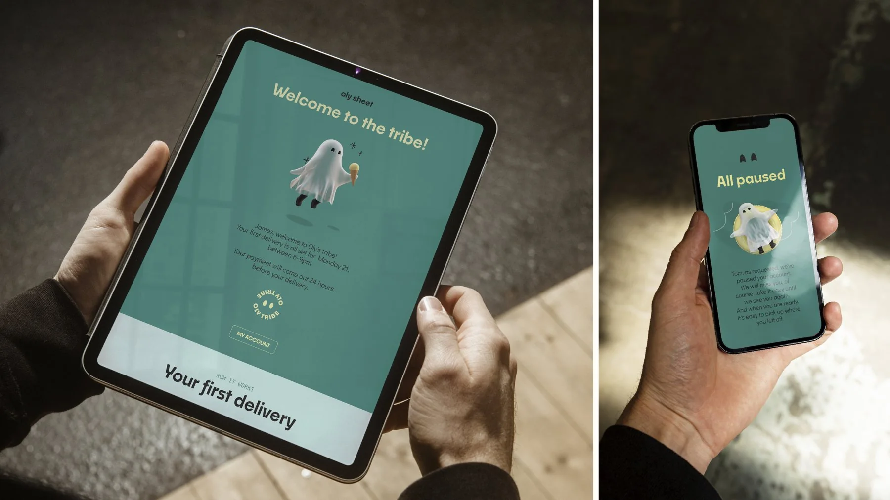
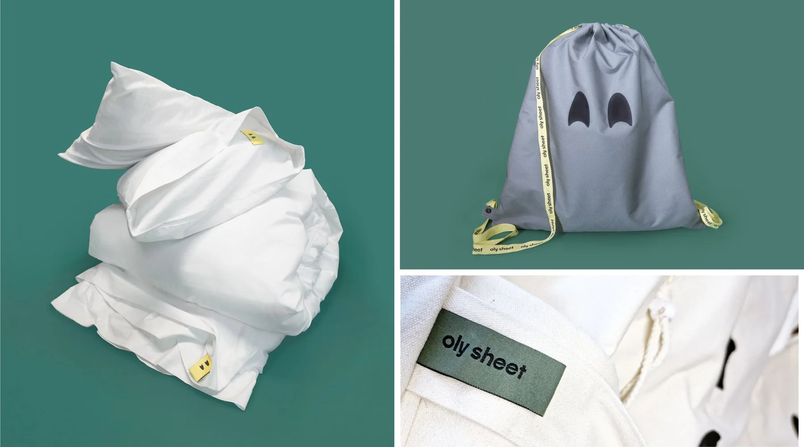

Changing behaviors
Oly Sheet was both product and service: we washed, dried and delivered premium bedding across London. Hotel-quality sheets without the laundry or the price tag.
As co-founder and Creative Director, I led the work from start to finish, with a strategist early on and a designer and 3D animators throughout. That covered brand, art direction and web, leading the team end to end.
Oly Sheet
Co-founder & Creative Director



